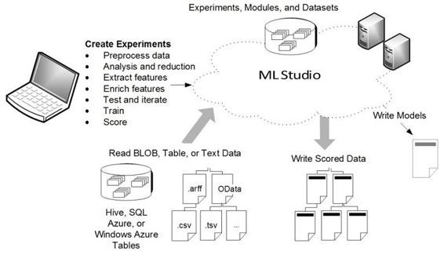

Azure machine learning studio
Microsoft initially launched the service under the name of Azure Machine Learning; however, they later changed it to Azure Machine Learning Studio in line with its core capabilities of being able to manage the entire process using the Studio itself (Visual Workbench). It's a managed service that you can use to create, test, operate, and manage predictive analytic solutions in the cloud. The core value proposition of this service is that you do not necessarily need to be a data scientist in order to build machine learning models as it provides multiple sample datasets and analysis modules, which can be used together to create your machine learning experiment. Once you have tried, tested, and trained your experiment, you can use it to start generating predictive analysis for your actual data and expose them as web services as well. The following diagram summarizes these core concepts in a concise manner:

One of the biggest benefits of Azure Machine Learning Studio is that there are multiple algorithms that are available out of the box as follows:
To learn more about Azure Machine Learning algorithms, refer to the cheat sheet at the following link: https://docs.microsoft.com/en-us/azure/machine-learning/studio/algorithm-cheat-sheets.
As you can see, there are multiple algorithms already available; however, developers/data scientists often need to extend or modify some of the functionalities, so also possible to use R or Python script modules and Jupyter notebooks.
In terms of execution, as we mentioned previously, you can expose your machine learning workflow to external applications using REST web services. In this, there are two broader options based on the type of execution models as follows: